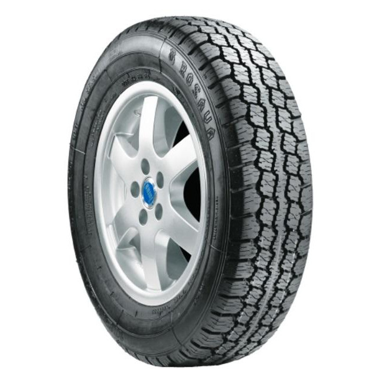

Як правильно читати маркування шини: Розшифровка за 3 хвилини
Що означають цифри на кшталт 9.00R20 або 195/65 R15? Розбираємося в індексах навантаження, швидкості, шаровості (PR) та даті виготовлення, щоб не помилитися при покупці.
Дізнайтеся, як правильно вибирати, експлуатувати та зберігати шини для вашого авто

Що означають цифри на кшталт 9.00R20 або 195/65 R15? Розбираємося в індексах навантаження, швидкості, шаровості (PR) та даті виготовлення, щоб не помилитися при покупці.

Коли варто купувати всесезонну гуму, а коли краще мати два окремі комплекти? Плюси, мінуси та реальний досвід використання всесезонок в українському кліматі.

Чи можна складати шини стопкою? Чи потрібно знімати їх з дисків? Прості поради, які допоможуть зберегти еластичність гуми та продовжити термін її служби на кілька сезонів.

Навіщо потрібна обкатка нової гуми, як правильно їздити перші кілька сотень кілометрів та чого категорично не варто робити.

Переваги та недоліки всесезонної гуми. Чи варто купувати один комплект на весь рік у нашому кліматі?

Як визначити, що комплект шин вже небезпечний для виїзду на дорогу. Залишкова висота протектора, мікротріщини та інші сигнали.